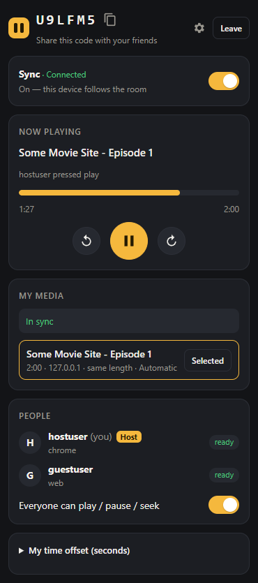
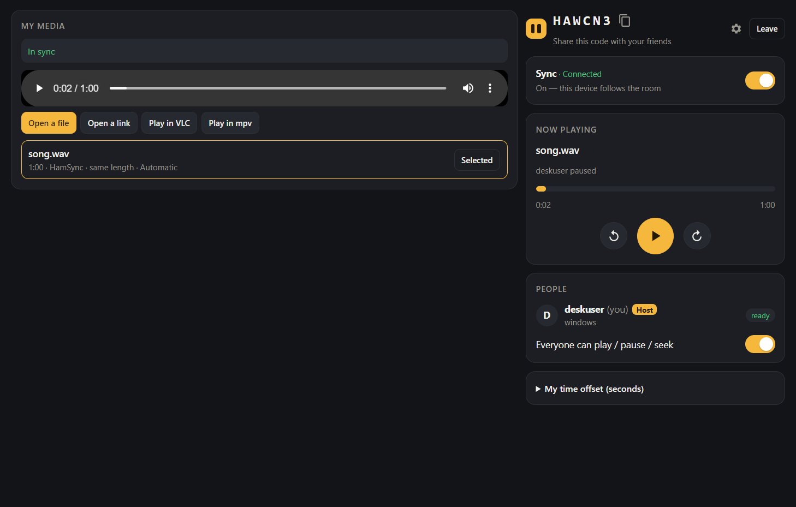
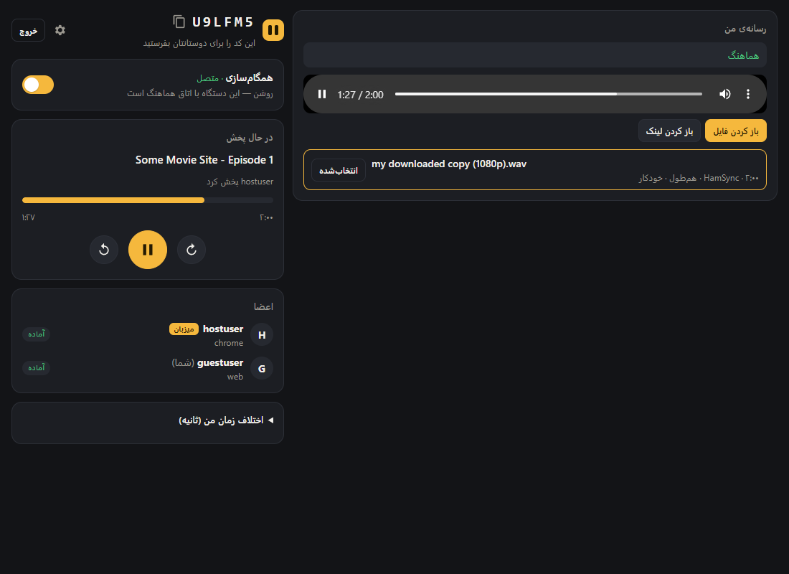

Everyone plays their own copy — YouTube or any website, a downloaded file, VLC — and HamSync keeps play, pause and the exact time identical for the whole group. Nothing is streamed, so quality stays perfect. هرکس نسخهی خودش را پخش میکند — یوتیوب یا هر سایت دیگر، فایل دانلودشده، VLC — و همسینک پخش، توقف و زمان دقیق را برای کل گروه یکسان نگه میدارد. هیچ چیزی استریم نمیشود، پس کیفیت دستنخورده میماند.
Windows · macOS · Linux · Android · iOS · Chrome · Firefox — free. ویندوز · مک · لینوکس · اندروید · iOS · کروم · فایرفاکس — رایگان.
Three steps, about a minute.سه قدم، حدود یک دقیقه.
One person creates a room and gets a 6‑letter code.یک نفر اتاق میسازد و یک کد ۶ حرفی میگیرد.
Everyone else enters the code — from the app or the browser extension.بقیه کد را وارد میکنند — از داخل برنامه یا افزونهی مرورگر.
Each person opens the same film or song. HamSync recognises it by its length — file names don't matter — and keeps everyone on the room creator's time. If anyone pauses, it pauses for all.هرکس همان فیلم یا آهنگ را باز میکند. همسینک آن را از روی طول زمانش میشناسد — اسم فایل مهم نیست — و همه را روی زمان سازندهی اتاق نگه میدارد. هرکس توقف بزند، برای همه متوقف میشود.
Always the latest version.همیشه آخرین نسخه. All releasesهمهی نسخهها
Pick your platform.پلتفرم خود را انتخاب کنید.
HamSync-Setup.exe.HamSync-Setup.exe را اجرا کنید.HamSync-mac.dmg and drag HamSync to Applications.HamSync-mac.dmg را باز کنید و HamSync را به Applications بکشید.chmod +x HamSync-linux.AppImage then run it.sudo apt install ./HamSync-linux.debchmod +x HamSync-linux.AppImage و سپس اجرا.sudo apt install ./HamSync-linux.debHamSync.apk and open it.HamSync.apk را دانلود و باز کنید.Apple only allows installing apps outside the App Store if you sign them with your own Apple ID:
HamSync.ipa and sign in with your Apple ID.اپل نصب برنامه خارج از App Store را فقط با امضای Apple ID خودتان اجازه میدهد:
HamSync.ipa را انتخاب و با Apple ID وارد شوید.hamsync-chrome.zip into a folder you will keep.chrome://extensions and switch on Developer mode (top right).file://), open the extension's Details and enable Allow access to file URLs.hamsync-chrome.zip را در پوشهای که نگهش میدارید از حالت فشرده خارج کنید.chrome://extensions را باز و Developer mode (بالا سمت راست) را روشن کنید.file://)، در Details افزونه گزینهی Allow access to file URLs را روشن کنید.about:debugging#/runtime/this-firefox.hamsync-firefox.zip.xpinstall.signatures.required to false in about:config.)about:debugging#/runtime/this-firefox را باز کنید.hamsync-firefox.zip را انتخاب کنید.xpinstall.signatures.required روی false در about:config نصب دائمی ممکن است.)The app also shows a short tutorial the first time you open it.خود برنامه هم بار اول یک آموزش کوتاه نشان میدهد.
Watching in a browser (YouTube, a streaming site)? Install the extension. Watching a downloaded file? Install the app for your computer or phone. You can have both.
در مرورگر تماشا میکنید (یوتیوب، سایت پخش آنلاین)؟ افزونه را نصب کنید. فایل دانلودشده دارید؟ برنامهی رایانه یا گوشی را نصب کنید. میتوانید هر دو را داشته باشید.
Open HamSync, go through the short introduction, press I need an account, choose a username and a password. Next time you only log in.
همسینک را باز کنید، معرفی کوتاه را رد کنید، حساب ندارم را بزنید و نام کاربری و رمز انتخاب کنید. دفعههای بعد فقط وارد میشوید.
Press Create a room. A code like K7M2QX appears at the top — tap the copy icon and send it to your friends in any messenger. You are now the host: the time of everyone follows yours.
ساخت اتاق را بزنید. کدی مثل K7M2QX بالای صفحه میآید — روی آیکون کپی بزنید و در هر پیامرسانی برای دوستانتان بفرستید. حالا شما میزبان هستید: زمان همه از شما پیروی میکند.
They type the code under Join a room and press Join. Under “People” you see who is in and whether they are ready.
کد را در بخش ورود به اتاق وارد میکنند و ورود را میزنند. در بخش «اعضا» میبینید چه کسانی آمدهاند و آیا آماده هستند.
The host starts the film first. The others open the same film — on a website, from a file, in VLC. As soon as HamSync sees a media with the same length, “My media” turns green: In sync.
اول میزبان فیلم را شروع میکند. بقیه همان فیلم را باز میکنند — در سایت، از روی فایل، در VLC. همین که همسینک رسانهای با همان طول ببیند، «رسانهی من» سبز میشود: هماهنگ.
Need a break? Just pause your own player: it pauses for everyone. Press play and everyone continues from the same moment. Jumping back to rewatch a scene works the same way.
استراحت میخواهید؟ فقط پلیر خودتان را متوقف کنید: برای همه متوقف میشود. پخش را بزنید و همه از همان لحظه ادامه میدهند. برگشتن به عقب برای دیدن دوبارهی یک صحنه هم همینطور است.



Join the room from the extension icon, then open the page and leave it open. If the video does not start by itself, click once on the page.
از آیکون افزونه وارد اتاق شوید، بعد صفحه را باز کنید و باز بگذارید. اگر ویدیو خودش شروع نشد، یک بار روی صفحه کلیک کنید.
In the app, inside the room, press Open a file and choose it. It plays right there.
در برنامه، داخل اتاق، باز کردن فایل را بزنید و فایل را انتخاب کنید. همانجا پخش میشود.
Install VLC, then in the desktop app press Play in VLC and choose the file. HamSync opens VLC and keeps it in sync.
VLC را نصب کنید، بعد در برنامهی دسکتاپ پخش در VLC را بزنید و فایل را انتخاب کنید. همسینک VLC را باز میکند و هماهنگ نگهش میدارد.
Use the HamSync app and Open a file (or Open a link for a direct video link). Other apps on the phone cannot be controlled.
از برنامهی همسینک و باز کردن فایل استفاده کنید (یا باز کردن لینک برای لینک مستقیم ویدیو). برنامههای دیگر گوشی قابل کنترل نیستند.
Open HamSync (the app, or the extension icon in your browser), choose Create account and pick a username and password. The same account works on all your devices.
همسینک را باز کنید (برنامه یا آیکون افزونه در مرورگر)، ساخت حساب را بزنید و نام کاربری و رمز انتخاب کنید. همین حساب روی همهی دستگاههایتان کار میکند.
Create a room makes you the host and shows a code such as K7M2QX. Send it to your friends; they type it under Join a room. Everybody's time follows the host.
ساخت اتاق شما را میزبان میکند و کدی مثل K7M2QX نشان میدهد. آن را برای دوستانتان بفرستید؛ آنها کد را در ورود به اتاق وارد میکنند. زمان همه از میزبان پیروی میکند.
One person can watch online in Firefox, another in Chrome and a third from a downloaded file — they stay together. HamSync only touches the media that belongs to the room: it recognises it by its length, so different file names are no problem. If it picks the wrong one, press Use this next to the right one under “My media”.
یک نفر میتواند آنلاین در فایرفاکس ببیند، دیگری در کروم و سومی از روی فایل دانلودشده — همه با هم میمانند. همسینک فقط به رسانهی مربوط به اتاق دست میزند: آن را از روی طول زمانش میشناسد، پس تفاوت اسم فایلها مشکلی نیست. اگر اشتباه انتخاب کرد، در بخش «رسانهی من» کنار مورد درست همین را هماهنگ کن را بزنید.
Use your player as usual. When anyone pauses, plays or jumps to another time, the same happens for the whole room. The host can switch off Everyone can play / pause / seek to keep control. The Sync switch turns HamSync off and on for your device without leaving the room.
از پلیر خود مثل همیشه استفاده کنید. هرکس توقف، پخش یا جابهجا کند، برای کل اتاق همان اتفاق میافتد. میزبان میتواند همه میتوانند پخش / توقف / جابهجا کنند را خاموش کند تا کنترل فقط دست خودش باشد. کلید همگامسازی همسینک را برای دستگاه شما بدون خروج از اتاق خاموش و روشن میکند.